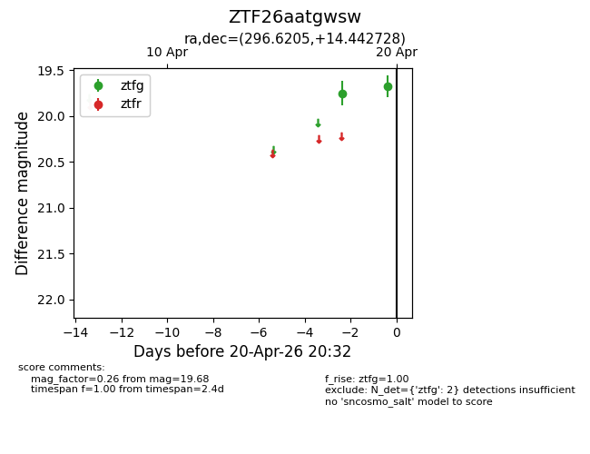
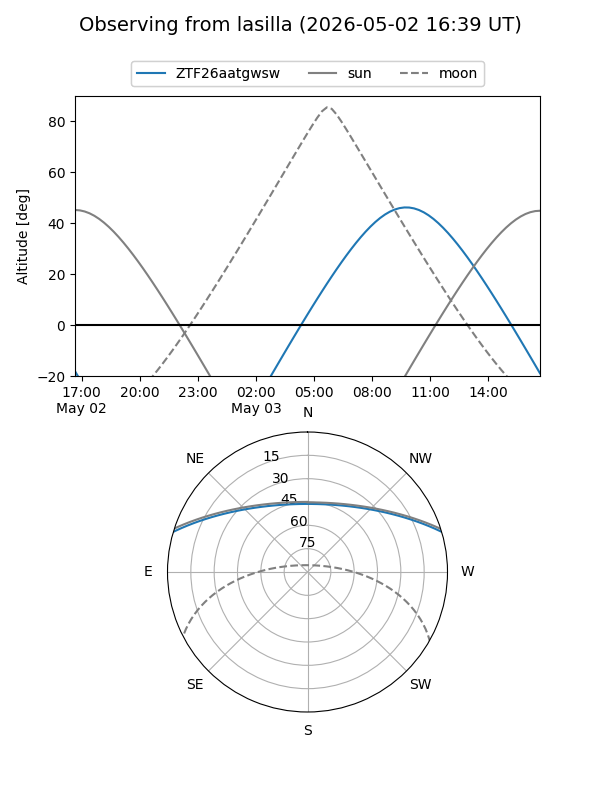
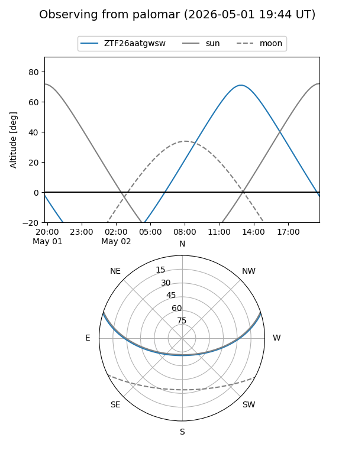
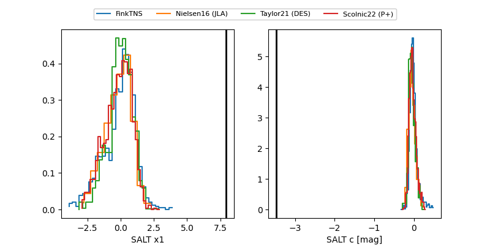

ZTF26aatgwsw
Target ZTF26aatgwsw at 2026-04-20 20:42
Aliases and brokers:
FINK: link
Lasair: link
ALeRCE: link
alt names
ZTF26aatgwsw (ztf,fink_ztf)
Coordinates:
equatorial (ra, dec) = 296.6205,+14.44273
equatorial (HMS+DMS) = 19:46:28.92,+14:26:33.82
galactic (l, b) = (52.1026,-5.23756)
Flags:
Photometry:
last ztfg=19.68
2 ztfg detections
Lightcurve

Visibility


Additional plots
